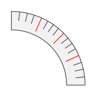

рис. 1 - Геометрия сегментной шкалы.
Главная → Сегментная шкала
Сегментная шкала – круговая измерительная шкала (рис. 1).
рис. 1 - Геометрия сегментной шкалы.
Для создания объекта типа SegmentScale необходимо подключить следующие скрипты:
Для создания сегментной шкалы в функцию-конструктор передаются основные параметры, которые используются для создания базового, или опорного, сегмента:
id - идентификатор сегментной шкалы в виде текстовой строки.
context - контекст типа CanvasRenderingContext2D для отрисовки сегмента.
cx - координата X центра базового сегмента шкалы.
cy - координата Y центра базового сегмента шкалы.
r_in - внутренний радиус базового сегмента шкалы.
thickness - толщина базового сегмента шкалы.
init_angle - начальный угол базового сегмента шкалы в градусах. Может принимать отрицательные значения. angle - угол базового сегмента шкалы в градусах.
Примеры использования различных свойств и методов объекта.
gradient - градиент заливки типа SegmentGradient.
background - цвет заливки базового сегмента (применяется, если не задан градиент заливки).
border_width - толщина границ базового сегмента.
border_color - цвет границ базового сегмента.
Границы базового сегмента могут быть заданы отдельно при прямом доступе к нему через свойство base_segment.
levels - массив уровней отметок шкалы. Задается в виде JSON массива. Каждый уровень отметок задается в виде JSON объекта, в котором ключами являются следующие параметры:
"divisions_count" - количество делений.
"mark_length" - длина отметок.
"mark_width" - толщина отметок.
"mark_color" - цвет отметок.Например, следующий массив уровней разобьет шкалу на рисунке 2 сначала на 4 деленния отметками красного цвета длиной 8 и шириной 1.
Затем каждое из этих делений будет разбито также на 4 деления отметками темно-серого цвета длиной 5 и шириной 1.[
{ 'divisions_count' : 4, 'mark_length' : 8, 'mark_width' : 1, 'mark_color' : 'rgba(255, 0, 0, 1)' },
{ 'divisions_count' : 4, 'mark_length' : 5, 'mark_width' : 1, 'mark_color' : 'rgba(64, 64, 64, 1)' }]

рис. 2 - Сегментная шкала с двумя уровнями отметок.
mark_position - позиция отметок шкалы. Допустимые значения параметра:
"inner" - примыкание к внутренней границе базового сегмента.
"middle" - расположение по середине базового сегмента.
"outer" - примыкание к внешней границе базового сегмента.mark_r_in - внутренний радиус отметок шкалы. Игнорируется, если задан параметр mark_position.
sign_r_in - внутренний радиус знаков шкалы.
sign_font - шрифт текста подписей.
sign_text_color - цвет текста подписей.
sign_text_border_width - толщина границы текста подписей.
sign_text_border_color - цвет границы текста подписей.
sign_text_direction - направление текста подписей.
visible - видимость. Значение true обеспечивает видимость объекта.
marks_visible - видимость отметок шкалы.
signs_visible - видимость знаков шкалы.
in_progress - в процессе. Флаг принимает значение true в процессе анимации.
build() - выполняет основные вычисления формы и внешнего вида базового сегмента и отметок шкалы с учетом заданных свойств и флагов.
draw() - функция отрисовки объекта.
instanceCopy() - создание независимой копии объекта.
Анимация сегментной шкалы - это различные изменения формы, положения или стиля оформления отметок шкалы со временем.
Основные параметры анимации:
duration - длительность анимации. Задается в секундах.
delay - задержка перед началом анимации. Задается в секундах.
direction - направление анимации. Набор допустимых значений зависит от вида анимации.
order - порядок анимации отметок шкалы. Допустимые значения:"together" - вместе. "one-by-one-clockwise" - одна за другой по часовой стрелке.
"one-by-one-anticlockwise" - одна за другой против часовой стрелки.
"level-by-level-clockwise" - уровень за уровнем по часовой стрелке.
"level-by-level-anticlockwise" - уровень за уровнем против часовой стрелки.
Для поочередной анимации длительность duration будет разделена равномерно между элементами массива с учетом задержки между анимацией элементов.lag - задержка между анимацией элементов массива. Задается в секундах.
appear(order, lag, direction, duration, delay) - появление отметок шкалы за счет постепенного изменения их формы.
Параметр direction может принимать значения, допустимые для аналогичного метода объекта SegmentScaleMark.
Если все отметки шкалы появились, то запускается событие segment-scale-appeared.disappear(order, lag, direction, duration, delay) - исчезание отметок шкалы за счет постепенного изменения их формы.
Параметр direction может принимать значения, допустимые для аналогичного метода объекта SegmentScaleMark.
Если все отметки шкалы исчезли, то запускается событие segment-scale-disappeared.fadeIn(order, lag, duration, delay) - появление отметок шкалы за счет постепенного изменения их прозрачности.
Если все отметки шкалы выцвели, то запускается событие segment-scale-faded-in.
fadeOut(order, lag, duration, delay) - исчезание отметок шкалы за счет постепенного изменения их прозрачности.
Если все отметки шкалы выцвели, то запускается событие segment-scale-faded-out.
События, запускаемые объектом SegmentScale, реализованы с помощью CustomEvent.
В параметре detail.scale передается ссылка на сам объект.
segment-scale-changed - сегментная шкала изменена. Изменена одна из ее отметок или базовый сегмент.
segment-scale-appeared - все отметки шкалы появились.
segment-scale-disappeared - все отметки шкалы исчезли.
segment-scale-faded-in - все отметки шкалы появились выцветанием.
segment-scale-faded-out - все отметки шкалы исчезли выцветанием.
Главная → Сегментная шкала